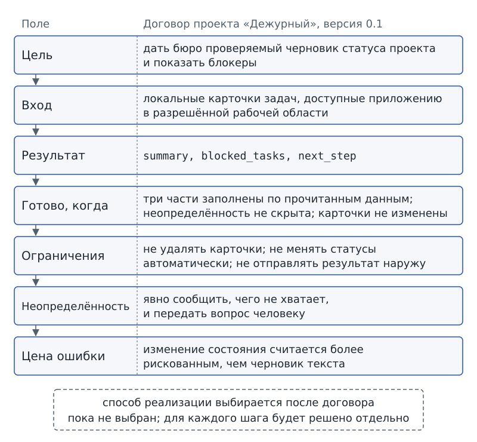
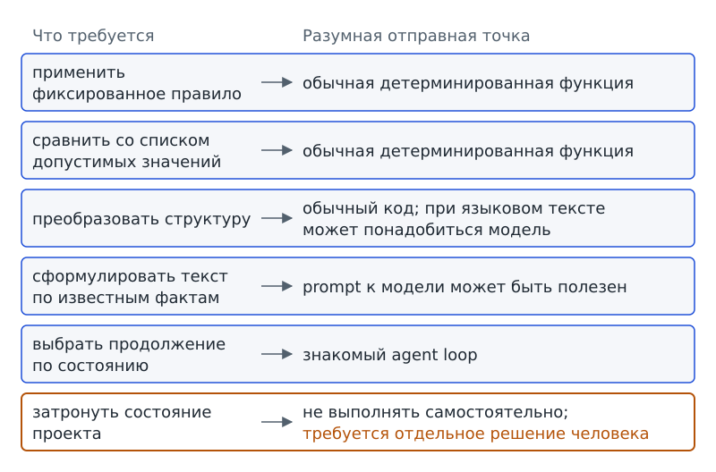

Глава 5. Договор задачи: что нужно определить до реализации?¶
С чего всё началось¶
На доске проектного бюро три новые карточки. Редакционная группа пишет Ане: «Сделай сводку по проекту». Лабораторная группа просит: «Покажи все блокеры» — препятствия, из-за которых задачи остановлены. А Марк, который спешит на репетицию, бросает через плечо: «Просто скажи, всё ли нормально».
Три просьбы звучат похоже: каждая требует что-то сообщить о состоянии проекта. Но ожидаемые продукты уже расходятся. Редакционной группе может понадобиться абзац для учителя, лабораторной — список конкретных задач, а Марку — одно слово «да» или «нет». Если передать просьбы «Дежурному» как есть, программа будет вынуждена сама додумывать эти различия. Даже связный ответ не снимет спор: кто решил, что именно считать правильным результатом?
Аня перечитывает просьбы и не выбирает ни одну. «Пока мы не договорились, что считать готовой работой, любой ответ будет спорным», — говорит она. Марк предлагает не усложнять:
— Мы же уже знаем prompt, tools и Agent Skill. Давайте выберем подходящий механизм и начнём писать.
Но глава 4 подвела нас к обратному порядку: сначала нужно понять задачу, а уже потом выбирать механизм. Иначе можно правильно применить знакомый способ и получить систему, которая аккуратно решает не ту задачу. Поэтому сейчас мы не запускаем новый tool и не подключаем живую модель. До главы 6 «Дежурный» остаётся учебной системой с уже знакомым planner_stub; наша работа — записать задачу так, чтобы код потом не угадывал наши намерения.
Вопрос-Прогноз. Какие сведения нужно записать до реализации, чтобы две разные команды одинаково поняли, что им дано, какой продукт считать готовым и какое действие запрещено? Составь свой список из пяти–семи пунктов. В конце главы сравним его с техническим паспортом проекта.
Главный вопрос главы. Что нужно определить до выбора tools и написания кода, чтобы задача была проверяемой и не требовала от программы угадывать намерения людей?
Фигура 12. Три просьбы, три ожидания
После главы ты сможешь¶
- превращать расплывчатую просьбу в проверяемое описание работы;
- отличать то, что должно получиться в конце, от действия вроде «обработать» или «проанализировать»;
- объяснять, почему данные всей задачи не равны сведениям, доступным модели в конкретном обращении;
- заранее замечать случаи, где данных или правил не хватает для одного обоснованного ответа;
- сравнивать последствия разных ошибок и по ним сужать самостоятельность системы;
- распознавать проверки с заранее заданными правилами, для которых agent loop не нужен;
- составлять технический паспорт проекта и карту четырёх будущих tools без их реализации.
Урок 9. От просьбы к договору задачи¶
1. Почему одной просьбы мало¶
Фраза «сделай сводку» задаёт направление, но не задаёт саму работу достаточно точно. За какой период нужна сводка? Какие карточки читать? Достаточно ли списка заблокированных задач? Что делать, если карточка испорчена или на доске оказались две карточки с одним номером? Можно ли менять статусы во время подготовки отчёта? Пока на эти вопросы нет общего ответа, просьба допускает несколько разных толкований.
Представим, что эту просьбу независимо получили три разработчика. Один посчитает все незавершённые задачи, другой покажет только blocked, третий добавит совет от модели. Ни один из них не обязан считать свою программу ошибочной: исходная просьба не выбрала между этими вариантами. Получатся три «сводки», но три разные работы.
Договор задачи (task contract) — согласованная и записанная до реализации постановка задачи: зачем выполняется работа, какие сведения даны, что должно получиться, что запрещено и как проверить готовность. Проще говоря, договор превращает просьбу в проверяемое соглашение, которое разные участники читают одинаково. В нём ещё нет обязанности использовать модель, tool или agent loop: способ реализации выбирают после того, как стало ясно, что именно требуется.
Слово «договор» здесь не юридическое. Команда заранее фиксирует общий смысл полей, чтобы после появления кода не выяснять задним числом, что каждый ожидал своё. В инженерных документах то же самое часто называют постановкой задачи; в нашем курсе мы говорим «договор задачи», чтобы подчеркнуть: запись согласована с теми, кто будет принимать результат. Проверка проста: если после чтения договора два человека по-разному отвечают на вопрос «готово или нет?», договор пока недостаточно точен.
2. Зачем вообще выполняется работа¶
Вернёмся к просьбе «сделай сводку». Зачем нужна эта сводка и какую пользу от неё ждут? Сам глагол «сделай» ответа не даёт. Для проектного бюро полезнее назвать назначение результата: «дать координатору краткую картину состояния проекта, чтобы он увидел заблокированные задачи и следующий шаг».
Цель — польза от работы: какое изменение или решение должен поддержать итоговый результат. Простыми словами, цель отвечает на вопрос «зачем мы это делаем?». Она не перечисляет строки кода и не назначает механизм: «использовать Agent Skill» не цель, а возможный способ организации работы.
Цель можно сравнить с адресом на конверте: без адреса письмо можно упаковать безупречно и всё равно отправить не туда. Здесь сходство только в назначении. В программе цель не «ведёт» данные и ничего не выполняет сама; она помогает людям проверить, что выбранный результат поддерживает нужное решение.
Для «Дежурного» рабочая цель главы 5:
Дать проектному бюро проверяемый черновик статус-сводки по локальным карточкам, не изменяя сами карточки.
Фраза «не изменяя сами карточки» сразу проводит границу: результат должен помочь бюро разобраться в состоянии проекта, но подготовка сводки не должна превращаться в изменение этого состояния.
3. Что должно существовать в конце¶
Теперь сравни две формулировки:
1. Обработать карточки проекта.
2. Подготовить черновик сводки с полями summary, blocked_tasks, next_step.
На первый взгляд обе строки могут показаться описанием результата: в обеих сказано, что нужно сделать. Но первая называет только действие. После «обработать карточки» непонятно, что именно должно остаться у команды и что предъявлять для проверки. Вторая строка называет продукт, который можно увидеть и сверить. Поля summary, blocked_tasks, next_step уже появились в главе 4 как выбранная структура итоговой сводки; здесь мы используем это решение, а не переопределяем structured output.
Результат — конкретный продукт или набор данных, который должен быть получен после выполнения задачи. Проще говоря, это ответ на вопрос «что у нас будет в руках или в файле, когда работа закончена?». В результате нет скрытого обещания, каким способом его получили: один и тот же формат можно собрать обычным кодом, моделью или несколькими шагами системы.
Проверь себя на ходу. Что из двух формулировок является результатом: «проверить обязательные поля» или «список карточек, прошедших проверку, и список найденных ошибок»? Почему?
Здесь легко спутать действие и продукт. Формулировки «проанализировать», «обработать», «проверить» называют ход работы, но не отвечают на вопрос, что команда получит в конце. Поэтому после такого глагола задавай ещё один вопрос: «Что именно будет предъявлено для приёмки?» Ответом может быть отчёт, список, запись, решение или сообщение об ошибке.
4. Что дано до начала работы¶
У проекта есть доска задач с карточками. Означает ли это, что все карточки автоматически доступны модели? Нет. В главах 1 и 4 мы уже разделяли наличие данных у приложения и сведения, переданные модели в конкретном обращении. Поэтому наличие файла на диске, обнаруженный resource и активный контекст нельзя считать одним и тем же.
Вход — данные и условия, которые доступны задаче к моменту начала работы. В нашем проекте входом являются локальные карточки задач и правила их допустимых полей. Это описание задачи целиком, а не только того, что прямо сейчас передано модели.
Как провести границу? Вход описывает данные всей задачи, а активный контекст — только сведения, доступные модели в конкретном обращении. Harness может прочитать данные, сохранить часть в состоянии и передать модели лишь нужный фрагмент. Поэтому запись «вход = всё, что знает модель» смешала бы два разных уровня системы.
Допустим, приложению доступны 40 карточек проекта, а для одного обращения модели нужны сведения только о двух. Тогда все 40 карточек относятся ко входу задачи, но в активный контекст этого обращения попадут сведения только о двух. Числа здесь условные; пример показывает не размер контекста, а различие между данными задачи и тем, что передано модели сейчас.
В техническом паспорте «Дежурного» вход формулируем так: «локальные карточки задач проекта, доступные приложению в разрешённой рабочей области». Мы не передаём модели путь к папке: конфигурация остаётся внутри приложения, как было установлено раньше.
5. Что нельзя делать даже ради полезной цели¶
Представь предложение Марка: «Чтобы сводка была аккуратнее, пусть программа сразу исправляет неправильные статусы». Это выглядит как удобное продолжение той же работы. Но после первой записи в карточку задача меняется: программа уже не только читает данные и готовит отчёт, но и изменяет общее состояние проекта.
Ограничение — правило, которое сужает допустимые способы выполнения задачи или запрещает определённые действия. Простыми словами, это граница «можно / нельзя» внутри договора. Для главы 5 важны как минимум три ограничения: карточки читаются без автоматического изменения; внешняя отправка не выполняется; изменение статуса без отдельного решения человека запрещено.
Что произойдёт, если просто написать в паспорте «запись запрещена»? Технического запрета от этой строки не появится: она не создаёт permissions и не превращается в sandbox. Ограничение сообщает разработчику требование, а harness и код должны действительно не допустить запрещённое действие. В главе 3 мы уже видели пример, где программа проверяла политику чтения и записи. Текст договора и технический механизм должны соответствовать друг другу, но выполняют разную работу.
Проверь себя на ходу. В паспорте написано «не менять карточки». Доказывает ли эта фраза, что программа технически не умеет записывать файл? Что ещё должно существовать в системе?
6. Как перестать спорить после результата¶
В главе 2 мы уже спрашивали, когда должен закончиться конкретный запуск: по observation и состоянию decide выбирала success, needs_input, error или limit. Теперь вопрос другой: когда команда имеет право принять сам продукт работы? Ответ нужно записать заранее, до реализации.
Критерий готовности — наблюдаемое условие, по которому команда может проверить, что требуемый результат получен в согласованной форме и не нарушает ограничения задачи. Проще говоря: это фраза «готово, когда…», которую можно проверить без чтения мыслей автора программы. Критерий готовности не равен самому терминалу success: терминал относится к конкретному запуску, а критерий — к приёмке продукта задачи.
Для нашей сводки критерий можно записать так: «готово, когда результат содержит summary, blocked_tasks, next_step; сведения о блокерах опираются на прочитанные карточки; при недостающих или неоднозначных данных система не придумывает ответ; карточки проекта не изменены».
Здесь три поля — ещё не весь критерий. Представим, что summary, blocked_tasks, next_step заполнены, но во время подготовки программа изменила статус одной карточки. Формат результата соблюдён, а договор всё равно нарушен. Поэтому критерий готовности проверяет и продукт, и существенные ограничения.
7. Где нельзя честно выбрать один ответ¶
Допустим, у карточки нет обязательного поля status. Или на доске две карточки с одним и тем же номером, но разными статусами. Что должна выбрать программа? Ни один вариант нельзя обосновать только прочитанными данными: информации или правила выбора не хватает.
Неопределённость — ситуация, в которой имеющихся данных или правил недостаточно, чтобы обоснованно получить один требуемый результат или выбрать один следующий шаг. Простыми словами, у системы нет достаточного основания для уверенного продолжения. Неопределённость не равна любой сложности и не означает, что обязательно нужна модель: иногда правильный ответ — просто остановиться и запросить уточнение.
Неопределённость не исчезает, даже если от программы ждут готовую сводку. Поэтому в договоре заранее записывают, как действовать при нехватке основания. Для «Дежурного» правило простое: не угадывать отсутствующее значение и не выбирать одну из двух конфликтующих карточек молча. Такой случай должен стать видимым для человека.
8. Центральный артефакт: технический паспорт проекта версии 0.1¶
Теперь отдельные решения можно собрать в один документ. Что он должен удержать вместе? Цель, вход, результат, критерий готовности, ограничения и правило для неопределённости. Это не код и не описание Agent Skill: паспорт фиксирует задачу до реализации.
| Поле | Договор проекта «Дежурный», версия 0.1 |
|---|---|
| Цель | дать бюро проверяемый черновик статуса проекта и показать блокеры |
| Вход | локальные карточки задач, доступные приложению в разрешённой рабочей области |
| Результат | summary, blocked_tasks, next_step |
| Готово, когда | три части заполнены по прочитанным данным; неопределённость не скрыта; карточки не изменены |
| Ограничения | не удалять карточки; не менять статусы автоматически; не отправлять результат наружу |
| Неопределённость (при нехватке данных) | явно сообщить, чего не хватает, и передать вопрос человеку |
| Цена ошибки | оценивается отдельно на уроке 10; изменение состояния считается более рискованным, чем черновик текста |
| Способ реализации | пока не выбран; для каждого шага будет решено отдельно |
В последней строке таблицы механизм пока не выбран — и это намеренно. Паспорт уже позволяет проверить, что нужно получить и какие границы нельзя нарушать. Только после этого имеет смысл решать, где хватит обычного кода, где может понадобиться модель, а где нужен agent loop.

Фигура 13. Технический паспорт проекта
9. Практика A: паспорт на бумаге¶
Работайте группами по три-четыре человека. Каждая группа получает одну расплывчатую просьбу: «покажи блокеры», «подготовь сводку для учителя», «скажи, что требует внимания». Не обсуждайте реализацию первые пять минут.
Заполните шесть строк паспорта — цель, вход, результат, готово когда, ограничения, неопределённость (что делать при нехватке данных) — и седьмую строку сверх таблицы: что точно не входит в задачу. Строку «цена ошибки» оставьте до урока 10, а «способ реализации» — пустой: это и есть правило практики. Затем передайте паспорт соседней группе. Соседи должны ответить только по тексту паспорта: какой продукт они обязаны вернуть и в каком случае имеют право остановиться без готового результата.
Если соседям приходится спрашивать автора «а что ты имел в виду?», поле недостаточно точное. Исправьте только это поле и передайте паспорт ещё раз.
Результат практики A: бумажный технический паспорт версии 0.1, который другая группа читает одинаково с авторами.
10. Практика B: тот же договор в task_spec.json¶
В треке B ты записываешь тот же паспорт в виде структурированных данных. В главе 1 ты уже видел JSON как текстовый формат представления структурированных данных; здесь мы не изучаем формальную схему JSON и не строим структурированный запрос к tool — это будет в главе 6. Сейчас нужно только перенести уже согласованный договор в файл, не реализуя ни одной функции.
Паспорт «Дежурного» в таком виде уже лежит в starter — это файл workspace/task_spec.json. В нём те же решения, что в таблице раздела 8, кроме строк «Цена ошибки» и «Способ реализации», а цель записана так, как в разделе 2. Вот он целиком:
{
"goal": "Дать проектному бюро проверяемый черновик статус-сводки по локальным карточкам, не изменяя сами карточки.",
"inputs": ["локальные карточки задач, доступные приложению в разрешённой рабочей области"],
"result": ["summary", "blocked_tasks", "next_step"],
"done_when": [
"три части результата заполнены по прочитанным данным",
"неопределённость не скрыта",
"карточки проекта не изменены"
],
"unknowns": [
"нет обязательного поля — сообщить, чего не хватает",
"две карточки с одним номером — не выбирать молча, передать вопрос человеку"
],
"forbidden_actions": [
"удалять карточки",
"менять статусы автоматически",
"отправлять результат во внешние системы"
]
}
Как читать этот файл? Имена полей здесь служат подписями нашего проекта, а не новыми терминами курса: done_when — это «готово, когда», unknowns — что делать при нехватке данных, forbidden_actions — ограничения. Не добавляй путь, который потом должна выбирать модель: расположение рабочих данных остаётся конфигурацией приложения. Не добавляй функцию или набросок кода — на этом шаге работа заканчивается договором.
Свой договор — просьбу твоей группы из практики A — запиши теми же шестью полями в новый файл workspace/drafts/task_spec.json; starter его не поставляет. Перед взаимной проверкой сделай прогноз: сможет ли другая пара по твоему файлу назвать результат и условие «готово, когда» без вопросов к тебе? Потом сравни свой файл с паспортом «Дежурного»: там, где твоя запись короче или расплывчатее, обычно и прячется спор.
Результат практики B: заполненный workspace/drafts/task_spec.json и короткая взаимная проверка с другой парой: «можно ли по этому файлу понять, что именно считается готовым?»
11. Мини-проверка урока 9¶
- Почему «обработать карточки» — плохой результат задачи?
- Чем вход задачи отличается от активного контекста модели?
- Почему ограничение «не менять файлы» ещё не доказывает технический запрет записи?
- Что должно быть в формулировке «готово, когда…»?
- Что делать, если два входных объекта противоречат друг другу и договор не даёт правила выбора?
- Найди ошибки в записи: «Цель: использовать модель и MCP. Результат: обработать карточки. Ограничения: не выходить за
workspace/— этого достаточно, чтобы система туда не вышла».
Ответы¶
- Это название процесса, а не наблюдаемого продукта.
- Вход — данные задачи; активный контекст — только сведения, доступные модели в конкретном обращении.
- Текст договора задаёт требование, а технический запрет обеспечивают код, permissions и другие механизмы harness.
- Наблюдаемый признак результата и существенные условия его приёмки.
- Не угадывать: зафиксировать неопределённость и запросить уточнение либо завершить текущую работу честным статусом.
- Три ошибки: цель названа через средство, а не через пользу; результат записан действием, а не продуктом; текстовое ограничение выдано за техническую границу, которую обеспечивает только harness.
Выходной билет урока 9¶
Допиши три строки:
Цель отвечает на вопрос «…».
Результат можно проверить, потому что …
Готово, когда …
Если во второй строке снова появился глагол без продукта — вернись к разделу 3.
Урок 10. Когда агент не нужен¶
1. Три способа решить одну маленькую задачу¶
На следующем заседании Марк приносит карточку и спрашивает: «Можно ли проверить, что в ней есть обязательные поля id, title, status?» Вариантов у него три: попросить модель прочитать текст и ответить, запустить agent loop или написать обычную проверку полей. Но какой из трёх механизмов здесь действительно нужен?
Технически можно вообразить все три варианта. Однако выбор начинается не со слова «ИИ», а с устройства самой задачи. Если заранее известно точное правило проверки, сначала стоит проверить, не решается ли задача обычным кодом.
Здесь правило известно: поля id, title, status должны присутствовать. Значит, программе не нужно каждый раз придумывать способ проверки. Она может применить одно и то же заранее заданное правило к одной и той же структуре данных.
2. Одинаковый вход — одинаковый результат¶
Детерминированная операция — операция, которая при одинаковом входе и одинаковых заранее заданных правилах даёт один и тот же результат. Проще говоря, если условия не изменились, результат не зависит от свободного выбора формулировки или следующего шага. Проверка наличия обязательных полей — такой случай.
Детерминированную проверку можно сравнить с турникетом: при тех же правилах один и тот же билет проходит одну и ту же проверку. Сходство заканчивается на повторяемости правила. Программа может быть сложной и содержать ошибки; «детерминированная» не означает «идеальная», «простая» или «безопасная сама по себе».
Здесь легко принять любое ветвление за признак агентности: программа ведь «выбирает». Но обычный код тоже умеет ветвиться — if выбирает разные результаты для разных входов по заранее заданному правилу. Agent loop нужен не для всякого выбора, а там, где система выполняет последовательность действий, получает observation и на его основе выбирает следующий шаг в рамках поставленной задачи.
Проверь себя на ходу. Проверка «status входит в список
planned / in_progress / blocked / done» требует agent loop? Что именно делает её детерминированной?
3. Когда достаточно обычного кода, когда нужна модель, когда нужен агентный цикл¶
Как сравнить механизмы без спора «где больше ИИ»? Сопоставим им разные виды работы. Таблица ниже не задаёт универсальный закон для всех систем; это рабочее правило нашей главы: сначала ищи самый простой механизм, который честно решает поставленную задачу.
| Ситуация | Что требуется | Разумная отправная точка |
|---|---|---|
| проверить наличие обязательных полей | применить фиксированное правило | обычная детерминированная функция |
| проверить допустимое значение статуса | сравнить со списком допустимых значений | обычная детерминированная функция |
| собрать три заранее заданных поля отчёта из уже проверенных данных | преобразовать структуру | обычный код; при языковом тексте может понадобиться модель |
| кратко объяснить человеку причину блокировки | сформулировать текст по известным фактам | prompt к модели может быть полезен |
| после observation решить, нужен ли ещё один шаг | выбрать продолжение по состоянию | знакомый agent loop |
| изменить общий статус задачи | затронуть состояние проекта | не выполнять самостоятельно; требуется отдельное решение человека |
Может показаться, что проект об ИИ должен чаще использовать модель или agent loop. Но договор задачи не требует этого. Сначала определяется работа, затем для неё выбирается самый узкий достаточный механизм. Если фиксированное правило уже решает задачу, модель не добавляет необходимой функции, зато добавляет ещё один компонент, результат которого придётся учитывать и проверять.

Фигура 14. Когда агент не нужен
4. Что будет, если система ошибётся¶
Две ошибки могут быть одинаково «неверными», но последствия у них разные. Ошибочный заголовок отчёта можно быстро заметить и переписать. Неверно поставленный done в общей карточке способен скрыть незавершённую работу от всей команды. Значит, при выборе границы самостоятельности нужно оценивать не только саму возможность ошибки, но и её последствия.
Цена ошибки — последствия, которые возникнут, если система примет неверный результат или выполнит неверное действие. Простыми словами, это ответ на вопрос «что плохого произойдёт, если мы ошибёмся?». Цена ошибки не равна вероятности ошибки и не равна «уверенности модели»: даже редкая ошибка может быть дорогой, а частая — почти безвредной.
Для главы 5 достаточно трёх случаев по последствиям без числовой шкалы. Если ошибку легко заметить и отменить, можно допустить больше автоматизации. Если ошибка затрагивает общие данные, публикацию или решения других людей, границы должны быть уже. Если последствия трудно откатить, участие человека становится особенно важным. Эти три случая — ориентир для обсуждения, а не точная система баллов.
В нашем проекте черновик сводки имеет меньшую цену ошибки, чем автоматическое изменение статуса карточки. Поэтому «Дежурный» может подготовить предложение или черновик, но не получает право менять общий проект только потому, что уверен в своём выводе.
5. Неопределённость и цена ошибки — разные оси¶
Неопределённость и цена ошибки отвечают на разные вопросы. Представим операцию «удалить файл с точно заданным именем»: способ действия может быть почти полностью задан правилом, но ошибка способна иметь серьёзные последствия. И наоборот, формулировка дружелюбного заголовка допускает разные варианты, хотя цена неудачной фразы может быть невелика.
Отсюда не следует правило «если сложно — нужен агент». Сложность, неопределённость и цена ошибки описывают разные стороны задачи. Неопределённость показывает, хватает ли входа и правил для одного обоснованного решения. Цена ошибки показывает, насколько серьёзны последствия, если решение окажется неверным. По этой оценке команда решает, сколько риска готова принять.
Эта пара помогает выбрать границу самостоятельности системы. Чем выше цена ошибки, тем меньше оснований поручать системе необратимое действие без человека — даже если модель сформулировала ответ очень уверенно.
6. От большой задачи к отдельным операциям¶
Вернёмся к техническому паспорту. Одна задача команды — «подготовить статус-сводку» — распадается на несколько операций. Почему это полезно? Для чтения, проверки, сборки отчёта и предложения изменения могут понадобиться разные механизмы и разные границы самостоятельности.
В проекте выделены четыре будущие операции. Четыре имени нужны не ради числа: каждое соответствует отдельной роли внутри договора — получить данные, проверить карточку, собрать продукт или подготовить предложение изменения. Сейчас мы только проектируем их место, не реализуем и не вызываем:
| Планируемая операция | Роль в договоре | Что важно сейчас |
|---|---|---|
Tools.read_task_cards() |
получить карточки из заранее заданной области | модель не передаёт путь |
Tools.validate_task_card(task_id) |
проверить конкретную карточку по фиксированным правилам | проверка может быть детерминированной |
Tools.build_status_report() |
собрать черновик отчёта по проверенным данным | результат остаётся черновиком |
Tools.propose_status_update(task_id, new_status, reason) |
подготовить предложение изменения | это не запись статуса; фактическое изменение требует решения человека |
Имена этих функций взяты из API_STARTER_BY_CHAPTER.md — файла с утверждёнными именами функций starter; приставка Tools. означает, что функция входит в готовый набор операций starter, который ты впервые встретил в главе 1 как Tools(). Сами функции уже лежат в starter как заготовки сквозного проекта, но в этой главе мы их не вызываем и не разбираем. Как модель будет запрашивать tool и как приложение обработает такой запрос, начнём разбирать только в главе 6; изменение статуса и подтверждение человека — существенно позже.
Проектный договор описывает всю задачу. Но если нужно отдельно зафиксировать обещания одной операции, понадобится более узкое описание.
Contract / контракт операции — согласованное описание назначения, входов, выхода, ограничений и ошибок операции. Простыми словами, Contract отвечает на вопрос «что именно обещает одна операция и на каких условиях». Он уже, чем договор задачи целиком: один проектный договор может потребовать нескольких контрактов операций.
В главе 5 достаточно различать два масштаба: договор задачи относится ко всей работе, а Contract — к одной операции. Подробные границы и формальные проверки отдельных tools будут проектироваться позже по Карте; сейчас паспорт проекта не нужно превращать в схему каждого tool.
7. Что «Дежурный» намеренно не делает¶
Чтобы границы не приходилось восстанавливать по смыслу, договор задачи прямо перечисляет и то, чего система не делает. Для нашего проекта список такой:
- не удаляет карточки;
- не меняет статус автоматически;
- не публикует отчёт и не отправляет его во внешнюю систему;
- не придумывает отсутствующие обязательные значения;
- не выбирает одну из конфликтующих карточек без правила или уточнения;
- не получает путь к рабочей папке от модели;
- не считает красивую фразу доказательством выполненного действия.
Последний пункт сохраняет правило из главы 1: текст о выполненном действии ещё не доказывает, что действие действительно произошло. Договор задачи не отменяет прежнюю архитектуру. Он добавляет к ней описание работы и границ, которые эта архитектура должна соблюдать.
8. Практика A: двенадцать карточек решений¶
Работайте группами. Для каждой ситуации выберите один основной вариант: обычный код, модель для формулировки, agent loop, человек должен принять решение. Затем напишите одну фразу обоснования.
- Проверить, есть ли
id,title,status. - Проверить, входит ли статус в четыре допустимых значения.
- Сосчитать число карточек со статусом
blocked. - Сформулировать два предложения для учителя по уже проверенным фактам.
- После observation решить, нужно ли читать следующую страницу карточек.
- Выбрать одну карточку из двух с одинаковым номером и разными данными.
- Изменить
blockedнаdoneв общей карточке. - Собрать список
blocked_tasksиз проверенных карточек. - Отправить готовую сводку во внешний чат.
- Сообщить человеку, что обязательного поля нет.
- Проверить, что итог содержит три требуемых поля.
- Решить, продолжать ли работу после неполного observation и оставшегося бюджета шагов.
Некоторые из двенадцати карточек специально требуют остановиться и проверить основание решения. В пункте 4 модель может формулировать текст, но факты должны быть уже получены и проверены системой. Пункт 6 нельзя «решить умнее» без дополнительного правила: неопределённость нужно показать. Пункты 7 и 9 затрагивают последствия за пределами черновика и потому не должны становиться самостоятельным действием «Дежурного» в этой главе. Пункт 12 относится к решению внутри agent loop: продолжать или остановиться решает не модель, а обычный код по observation и счётчикам, как decide в главе 2; agent loop нужен, чтобы повтор вообще существовал, но само решение — детерминированное правило.
Результат практики A: заполненная таблица из 12 ситуаций и два случая, где группа отказалась от agent loop как от лишнего механизма.
9. Практика B: имена функций и входные значения без реализации¶
В треке B зафиксируй план четырёх операций в текстовом файле workspace/drafts/ch05_operations.txt (по образцу ch04_choices.txt главы 4) или в рабочей тетради. Реализацию не пиши. Запиши только имя каждой функции и названия входных значений в скобках, как они указаны в файле с утверждёнными именами функций, а рядом — одну строку назначения:
Tools.read_task_cards()
Tools.validate_task_card(task_id)
Tools.build_status_report()
Tools.propose_status_update(task_id, new_status, reason)
Теперь рядом с каждой строкой отметь, что делает операция: «чтение из заданной области», «детерминированная проверка», «сборка продукта» или «предложение изменения». Для read_task_cards() отдельно подпиши: «путь не приходит от модели». Для propose_status_update(...) подпиши: «не изменяет файл напрямую».
Не описывай пока, как модель оформляет запрос операции и как приложение сопоставляет этот запрос с разрешённой функцией: это работа следующих глав. Смысл упражнения — увидеть операции до их реализации и проверить, что каждая обслуживает конкретную часть договора задачи.
Результат практики B: карта четырёх будущих tools с назначением и список минимум из трёх действий, которые система не выполняет самостоятельно.
10. Обязательные проверки: должен / не должен / ошибка / граница¶
Должен¶
Другой ученик получает технический паспорт и должен без устных подсказок назвать требуемый результат, условия готовности и три ограничения. Если он это может, договор выполняет свою функцию как общий источник требований.
Не должен¶
Фраза «обработать карточки» не должна проходить как готовый результат. И проверка обязательных полей не должна автоматически превращаться в agent loop только потому, что проект связан с ИИ.
Ошибка¶
Если обязательный вход отсутствует или две записи противоречат друг другу, система не должна маскировать неопределённость красивой сводкой. Договор должен позволить явно сообщить, чего не хватает, и остановить попытку получения готового продукта.
Граница¶
propose_status_update(...) может подготовить предложение изменения, но предложение не равно применённому изменению. Фактическая запись общего статуса требует отдельного решения человека и отдельного механизма, который разберём позже.
11. Врезка безопасности: границы записываются до кода¶
Безопасность
Чем выше цена ошибки, тем раньше в проектировании нужно назвать запрет и человека, который принимает окончательное решение.
В главе 5 «Дежурный» работает только с проектированием чтения, проверки и черновика отчёта. Автоматическое удаление, внешняя публикация и изменение статуса в общий файл не входят в договор.
Записанный запрет сам по себе не создаёт permissions или sandbox. Он превращается в техническую границу только тогда, когда harness и runtime действительно его обеспечивают.
Уверенность модели не выдаёт разрешение. Предложение изменения и применённое изменение — разные события.
Эта врезка не перечисляет все возможные угрозы проекту — полный разбор будет позже. В этой главе достаточно правила: если действие имеет заметные последствия, его границу нужно назвать до того, как появится удобная кнопка «сделать автоматически».
12. Мини-проверка урока 10¶
- Почему ветвящийся
ifне делает программу агентом? - Что означает «детерминированная операция»?
- Чем цена ошибки отличается от вероятности ошибки?
- Для чего в проекте нужен
validate_task_card(task_id)? - Почему
propose_status_update(...)не должен считаться изменением статуса? - Когда agent loop действительно добавляет необходимый механизм?
Ответы¶
- Обычный код тоже выбирает ветви по фиксированным правилам; агентность определяется не самим наличием ветвления.
- При одинаковом входе и одинаковых правилах операция даёт один и тот же результат.
- Цена ошибки описывает последствия, а вероятность — насколько часто ошибка может случиться; это разные характеристики.
- Чтобы проверять конкретную карточку по установленным правилам, не поручая такую проверку свободной языковой формулировке.
- Потому что операция только готовит предложение; фактическая запись — отдельное действие и отдельное решение человека.
- Когда работа требует нескольких шагов, observation меняет следующий шаг, а задача действительно допускает такой выбор в заданных границах.
Выходной билет урока 10¶
Выбери один реальный школьный пример и закончи фразы:
Здесь агент не нужен, потому что …
Цена ошибки здесь …, потому что …
Человеку нужно оставить решение о …
Хороший ответ может начинаться с отказа от ИИ. Умение не добавлять agent loop без необходимости — такой же инженерный навык, как умение его построить.
Зачем это тебе¶
Представим групповую презентацию. Один участник говорит: «Сделай красивый слайд», второй ждёт диаграмму, третий — короткие тезисы. Пока они не назвали цель, вход, результат и условие готовности, одна и та же просьба скрывает три разных ожидания. Короткий договор позволяет обнаружить различие до того, как кто-то потратит время на неподходящий вариант.
В лабораторной работе фраза «проверь результаты» тоже слишком широкая. Нужно проверить единицы измерения, обязательные поля таблицы, физическую правдоподобность или оформление? Когда часть проверки сводится к фиксированным правилам, для неё достаточно обычного кода или чек-листа; добавлять модель только ради слова «ИИ» не требуется.
В общем школьном документе граница проходит ещё заметнее. Подготовить черновик и автоматически изменить чужой статус — разные действия по последствиям. То же относится к отправке сообщения от имени команды и удалению файла. Договор задачи заранее отделяет «система может предложить» от «система имеет право выполнить».
Шаг сквозного проекта¶
После главы 4 у проекта уже есть карта механизмов и выбран Agent Skill status-summary как будущая повторяемая процедура. Но одного выбора процедуры недостаточно: теперь мы фиксируем договор задачи для всего проекта — технический паспорт версии 0.1.
Команда фиксирует:
- Цель: подготовить проверяемый черновик статус-сводки по локальным карточкам.
- Вход: карточки задач, доступные приложению в разрешённой рабочей области.
- Результат:
summary,blocked_tasks,next_step. - Готово, когда: три части сформированы по прочитанным данным, неопределённость не скрыта, карточки не изменены.
- Ограничения: нет автоматического удаления, внешней отправки и изменения статусов.
- Четыре будущие операции:
read_task_cards,validate_task_card,build_status_report,propose_status_update. - Что агент не делает: не угадывает отсутствующие факты и не применяет изменение статуса самостоятельно.
В starter функции с этими именами уже лежат как заготовки сквозного проекта, но мы их пока не вызываем: в главе 5 работа заканчивается проектированием. Иначе легко перевернуть порядок — сначала написать удобную функцию, а потом подбирать к ней задачу. Здесь мы делаем наоборот: сначала фиксируем требования, затем выбираем реализацию.
Достраиваем «Дежурног
Технический паспорт задачи становится файлом 05_task_contract.md с разделами «Цель», «Вход», «Результат», «Готово, когда» и «Запрещено». При запуске run сверяет черновик с разделом «Готово, когда» и печатает contract: ok или называет недостающий пункт. Эта проверка намеренно узкая: она обнаруживает названные требования в результате, но сама по себе не доказывает истинность или качество всего отчёта.
# запуск из корня starter
# фикстура: tests/fixtures/ch05/05_task_contract.md -> workspace/my_agent/05_task_contract.md
python dezhurny.py run
dezhurny: run
goal: не настроено (глава 1)
config: workspace/my_agent
model: replay — авторский сценарий, не запись модели
scenario: success
stop_policy: max_steps 5, max_retries 1 (по умолчанию, глава 2)
tools: allowlist диспетчера (по умолчанию, глава 7)
Шаг 1 | read_task_cards | continue
Шаг 2 | validate_task_card | continue
Шаг 3 | validate_task_card | continue
Шаг 4 | validate_task_card | continue
Шаг 5 | build_status_report | success
Остановка: success
# Черновик статуса проекта
Всего задач: 3.
Незавершённых: 2.
Заблокированных: 1.
## Незавершённые задачи
- `task-002` — Подготовить макет афиши (in_progress)
- `task-003` — Проверить список оборудования (blocked)
## Блокеры
- `task-003`: Нет подтверждённого списка оборудования
Черновик. Отправка и изменение карточек не выполнялись.
contract: ok
save: не настроено (глава 3)
state: не настроено (глава 10)
trace: не настроено (глава 12)
Качество модели не подтверждено этим техническим прогоном.
Возвращаемся к трём просьбам¶
Теперь вернёмся к редакционной группе, лаборатории и Марку. В начале главы три просьбы выглядели как варианты одного запроса о состоянии проекта. После составления договора видно различие: «сводка», «список блокеров» и «всё ли нормально?» требуют разных результатов и могут иметь разные критерии готовности.
Вместо трёх расплывчатых просьб у бюро теперь есть пять вопросов, которые Аня записала на доске: «Зачем?», «Из чего?», «Что получить?», «Когда готово?», «Чего нельзя делать?». Пять вопросов соответствуют цели, входу, результату, критерию готовности и ограничениям. Они не гарантируют, что задачи совпадут; они позволяют выяснить это до кода. Если ответы совпадают, команда получает общий договор. Если ответы расходятся, различие становится видимым до реализации.
Марк перечитывает паспорт и кивает:
— Значит, выбирать tool надо не после слова «сводка», а после того, как мы договорились, что именно нужно получить.
Пять вопросов Ани и есть ответ на вопрос-прогноз. Договор не угадывает намерения людей. Он переводит ожидания в формулировки, которые можно сравнить и проверить.
Проверь себя¶
- Что такое договор задачи и чего в нём ещё не обязано быть?
- Чем цель отличается от результата?
- Почему вход задачи не равен активному контексту модели?
- Почему «проанализировать карточки» — недостаточный результат?
- Чем ограничение в паспорте отличается от технических permissions?
- Что такое критерий готовности и чем он отличается от терминала
success? - Что такое детерминированная операция? Приведи пример из проекта.
- Что означает цена ошибки и почему она не равна уверенности модели?
- Назови четыре будущие операции проекта и объясни, какая из них намеренно не применяет изменение статуса.
Ответы¶
- Это согласованная и записанная до реализации постановка задачи: цель, вход, результат, ограничения и критерий готовности. Конкретный механизм реализации в нём ещё можно не выбирать.
- Цель отвечает «зачем», результат — «что конкретно должно быть получено».
- Вход относится ко всей задаче; активный контекст — только к сведениям, доступным модели в конкретном обращении.
- Это процесс без наблюдаемого продукта, поэтому нельзя однозначно проверить готовность.
- Ограничение — требование договора; permissions — технический механизм, который реально допускает или запрещает операции.
- Критерий готовности задаёт условия приёмки продукта;
success— терминал конкретного запуска agent loop. - Операция с одинаковым результатом при одинаковом входе и фиксированных правилах; например, проверка обязательных полей карточки.
- Цена ошибки — последствия неверного результата или действия. Уверенность модели — не разрешение и не мера этих последствий.
read_task_cards,validate_task_card,build_status_report,propose_status_update; последняя только готовит предложение и не меняет файл напрямую.
Словарь главы¶
| Термин | Рабочая формулировка |
|---|---|
| Договор задачи (task contract) | согласованная и записанная до реализации постановка задачи: зачем выполняется работа, какие сведения даны, что должно получиться, что запрещено и как проверить готовность |
| Цель | польза от работы: какое изменение или решение должен поддержать итоговый результат |
| Вход | данные и условия, которые доступны задаче к моменту начала работы |
| Результат | конкретный продукт или набор данных, который должен быть получен после выполнения задачи |
| Ограничение | правило, которое сужает допустимые способы выполнения задачи или запрещает определённые действия |
| Критерий готовности | наблюдаемое условие, по которому команда может проверить, что требуемый результат получен в согласованной форме и не нарушает ограничения задачи |
| Неопределённость | ситуация, в которой имеющихся данных или правил недостаточно, чтобы обоснованно получить один требуемый результат или выбрать один следующий шаг |
| Детерминированная операция | операция, которая при одинаковом входе и одинаковых заранее заданных правилах даёт один и тот же результат |
| Цена ошибки | последствия, которые возникнут, если система примет неверный результат или выполнит неверное действие |
| Contract / контракт операции | согласованное описание назначения, входов, выхода, ограничений и ошибок операции |
Мост к главе 6¶
У нас появились договор проекта и карта четырёх будущих операций. Следующий разрыв уже виден: написать на бумаге read_task_cards() легко, а связать запрос модели с реальным вызовом функции так, чтобы приложение сохранило заданные границы, труднее.
В следующей главе впервые вместо planner_stub появится ответ модели, подготовленный авторами заранее, — replay, знакомый по показу учителя в главе 2; это авторский сценарий, а не запись живой модели. Тогда можно будет проследить границу между просьбой модели и действием программы: модель запрашивает операцию структурированным сообщением, а приложение получает имя операции и переданные для неё данные, прежде чем что-либо запускать. Сам запрос ещё не означает, что действие выполнено.
Следующий вопрос. Как структурированный запрос модели превращается в вызов обычной функции — и кто на самом деле выполняет этот вызов?
Ответ ты найдёшь в главе 6, «Первый tool».